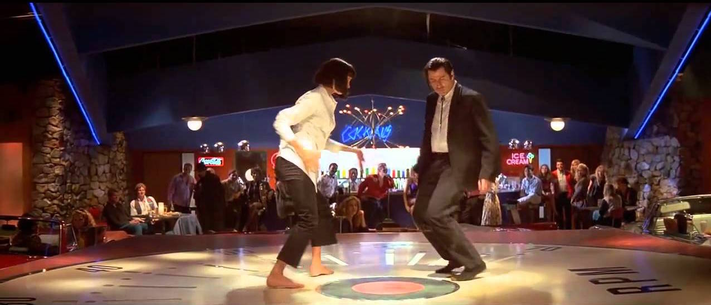

Cinematography
Quentin Tarantino never misses with his cinematography and direction of his films, having Andrzej Sekula doing the cinamatography of the film, each shot significantly enhances the experience and adds to the direction of his story telling, the man really has a keen eye for cinamatography and makes the best out of it in Pulp fiction specifically, allowing the film to age extremely well. Some of the beautiful shots can be seen below

The cinamatography shines when the duo is shown, it encapsulates the similarities between the two but also the stark contrast between the two. The cinamatography and direction of this film is incomparable to others of the time.